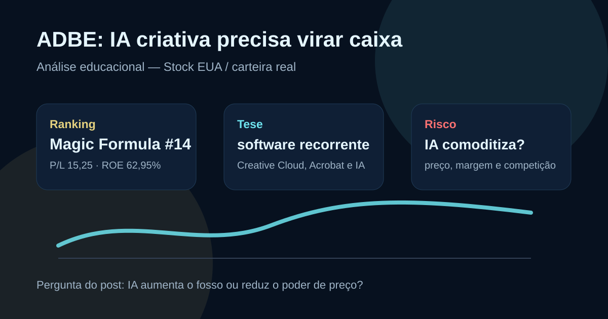

11/09: ADBE, Adobe e a prova de caixa da IA criativa
Adobe voltou a aparecer no Top 20 da Magic Formula EUA e está na carteira dolarizada do IA em Loop. A pergunta central é objetiva: a inteligência artificial aumenta o valor do pacote criativo ou ameaça cobrar mais investimento sem elevar retorno?

ADBE reúne software recorrente, marca forte e alta rentabilidade. O ponto de atenção é provar que IA vira receita incremental, não apenas custo competitivo.
Resposta curta: qualidade clara, tese depende de monetização de IA
Na base local de fundamentos de stocks EUA com data-base de 06/09/2026, ADBE aparece com preço de US$ 266,51, valor de mercado de aproximadamente US$ 105,94 bilhões, P/L de 15,25, P/L projetado de 9,69, EV/EBITDA de 11,04, ROE de 62,95% e sem dividend yield informado.
No ranking Magic Formula EUA de setembro, ADBE está em 14º lugar. A leitura combina retorno alto sobre capital, preço menos esticado que outros nomes de software e negócio com receita recorrente. A presença na carteira real dolarizada vem de compras verificadas em julho e agosto de 2026, com execução de US$ 38,99 em julho e US$ 30,76 em agosto.
O que os números recentes indicam
O release de resultados do 3º trimestre fiscal de 2026 informou US$ 6,76 bilhões de receita, avanço de 13% sobre o ano anterior, US$ 2,35 bilhões de lucro operacional GAAP e US$ 2,97 bilhões de lucro operacional não GAAP. A companhia também reportou ARR total de US$ 27,50 bilhões, métrica relevante para medir recorrência.
O ponto favorável é que Adobe continua convertendo software essencial em receita previsível. O ponto que exige acompanhamento é a transição competitiva: ferramentas de geração de imagem, vídeo e produtividade podem aumentar o valor do pacote Creative Cloud e Document Cloud, mas também reduzem barreiras para concorrentes se a diferenciação ficar apenas no modelo de IA.
| Métrica | Fonte/período | Valor | Leitura |
|---|---|---|---|
| Receita | 3T fiscal 2026 | US$ 6,76 bi | crescimento ainda saudável |
| ARR total | saída do 3T fiscal | US$ 27,50 bi | recorrência alta |
| Lucro operacional GAAP | 3T fiscal 2026 | US$ 2,35 bi | margem relevante |
| Fluxo de caixa operacional | 3T fiscal 2026 | US$ 2,52 bi | boa conversão em caixa |
| Guidance de receita 2026 | faixa atualizada | US$ 26,576 bi a US$ 26,626 bi | visibilidade para o ano |
Por que Adobe importa para o investidor
Adobe é uma tese didática porque junta três elementos raros: marca global, ferramentas que viraram padrão de trabalho e modelo de assinatura. Photoshop, Illustrator, Premiere, Acrobat e Experience Cloud criam hábito, integração e custo de troca em empresas, criadores e áreas de marketing.
A inteligência artificial muda a pergunta. Se Firefly e os recursos generativos elevarem produtividade e justificarem tíquetes maiores, a Adobe pode defender preço e margem. Se a IA comoditizar parte da criação visual, a empresa precisará gastar mais para preservar o mesmo crescimento.
ADBE parece mais interessante como estudo de qualidade com valuation menos exagerado do que como aposta cega em IA. A tese melhora se ARR, margem e fluxo de caixa continuarem subindo junto com adoção de recursos generativos. A tese piora se a IA pressionar preço, elevar custo de computação ou acelerar perda de usuários para ferramentas mais baratas.
O que favorece e o que ameaça a tese
Favoráveis
• Receita recorrente e base instalada global.
• ROE alto e múltiplos menores que várias empresas de software.
• Portfólio essencial para criação, documento e marketing.
• Fluxo de caixa operacional forte no trimestre.
• Compras reais pequenas permitem acompanhar sem transformar tese em certeza.
Desfavoráveis
• Concorrência de ferramentas nativas de IA e soluções mais baratas.
• Custo de computação pode pressionar margem se monetização atrasar.
• Crescimento de dois dígitos precisa continuar para sustentar reprecificação.
• Risco regulatório e de direitos autorais em conteúdo gerado por IA.
• Sem dividendo relevante: retorno depende de crescimento e recompra.
Checklist para acompanhar daqui em diante
| Ponto | O que monitorar | Se piorar |
|---|---|---|
| ARR | crescimento de assinaturas e retenção | tese de recorrência perde força |
| IA | monetização do Firefly e pacotes generativos | IA vira custo, não vantagem |
| Margem | lucro operacional e custo de computação | valuation deve contrair |
| Concorrência | Canva, Microsoft, Google e modelos abertos | poder de preço diminui |
| Fluxo de caixa | caixa operacional, recompra e endividamento | qualidade financeira fica menos evidente |
Conclusão
A resposta para a pergunta do post é: Adobe ainda tem qualidade suficiente para justificar acompanhamento e posição pequena, mas a prova da IA precisa aparecer em caixa e retenção. O ranking mostra retorno elevado; o release recente mostra crescimento; o valuation parece mais razoável que o de muitos nomes de tecnologia. O risco está em pagar por uma vantagem competitiva que pode diminuir se a IA tornar criação digital mais barata e abundante.
Na régua do IA em Loop, ADBE é uma boa candidata para observar a transição entre software tradicional e software aumentado por inteligência artificial: a tese é forte quando recorrência, margem e fluxo de caixa caminham juntos; fica frágil quando o discurso de IA cresce mais rápido que a monetização.